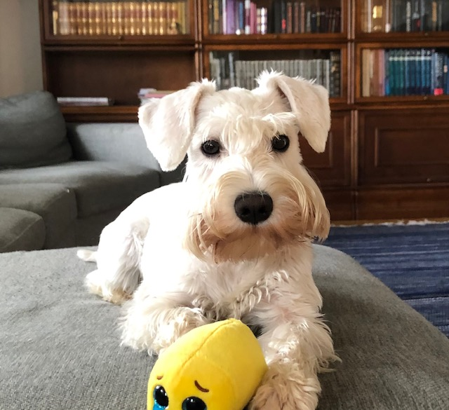

Dora
Dora (official name Vanneviian Dolores).
Dora is a two and a half year old dwarf schnauzer. Dora's coloring is white. We love do together long walks in forests. Sniffing smells and playing with other dogs are Dora´s favourites things to do.
Dora is a very intelligent dog and she quickly learns new skills.
